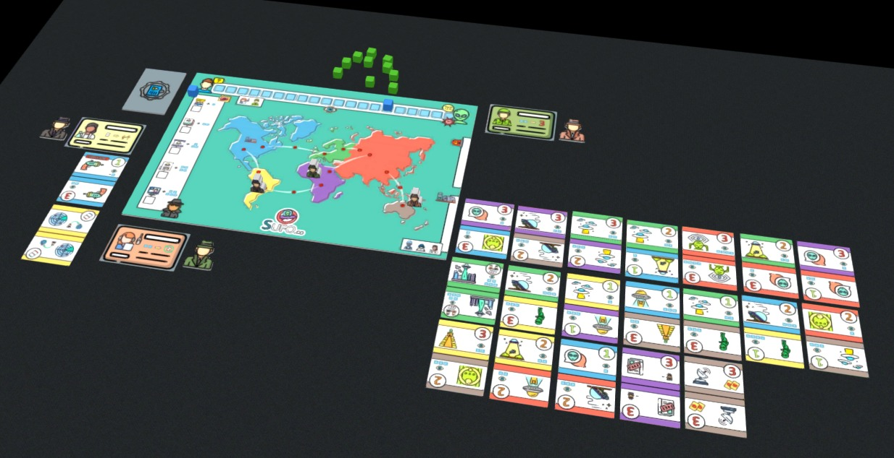

A verdade NÃO está lá fora!
Esta cada vez mais dificil de esconder a verdade da população.
Graças aos nossos visitantes que não querem coloborar com a descrição, precisamos trabalhar intensamente.
Vocês, agentes da S ufo.co, devem partir imediatamente para encobrir os rastros desses inconcequentes!
Usem os recursos que forem necessários para que a população não descubra que nunca estivemos sozinhos no universo.
Mais uma coisa...
Há um infiltrado entre nós! Ele está vazando informações e dificultando nosso trabalho.
Boa sorte!
Componentes:
- 1 tabuleiro
- 21 Cartas de evento
- 5 Cartas de especialidades
- 3 Tokens de jogador
- 3 Marcadores de token de jogador
- 10 Marcadores de veneto
- 2 Marcadores de trilha
Teste no Tablatop Simulator
Análise do jogo:
Um jogo de tabuleiro cooperativo onde os participantes assumem o papel de agentes governamentais encarregados de ocultar evidências extraterrestres da população.
O título faz um trocadilho com a sigla para busca de OVNIs e o sentimento de "sufoco" gerado pelas mecânicas de pressão constante e gestão de crises globais.
Os jogadores utilizam cartas de especialidade e pontos de ação para resolver eventos no mapa-múndi, tentando impedir que a trilha da verdade alcance seu limite máximo. A experiência é dificultada por um infiltrado, que funciona como uma regra interna para vazar informações e acelerar a derrota do grupo.
Para vencer, a equipe precisa processar todo o baralho de eventos antes que a existência alienígena se torne de conhecimento público. As decisões exigem equilíbrio, pois o uso de habilidades especiais pode oferecer auxílio imediato ao custo de aumentar o risco de exposição futura.
Podcast
Já que leu tudo até aqui, que tal ouvir?!
É só dar o play e curtir!